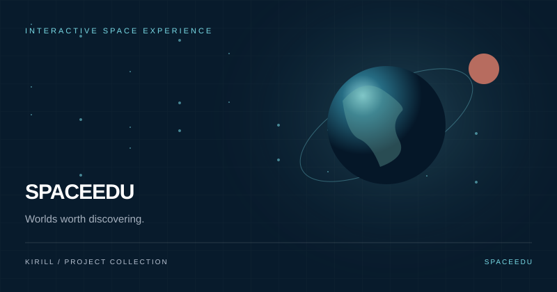
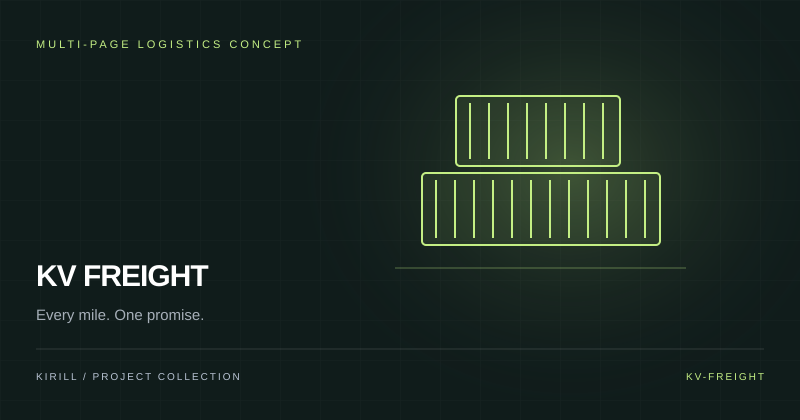
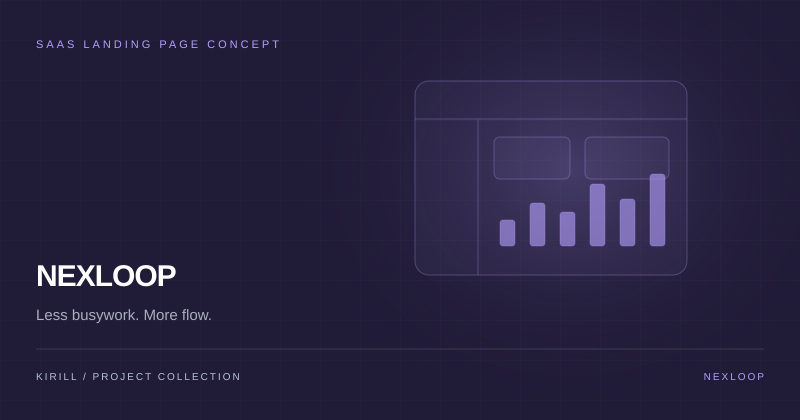
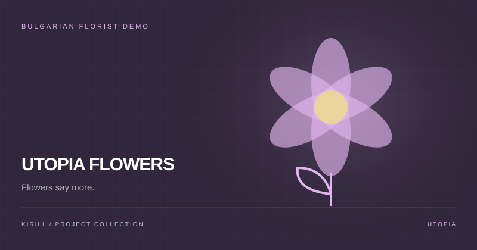
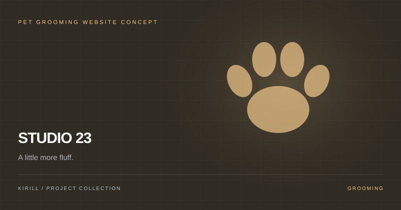
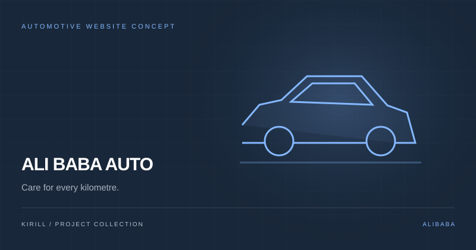
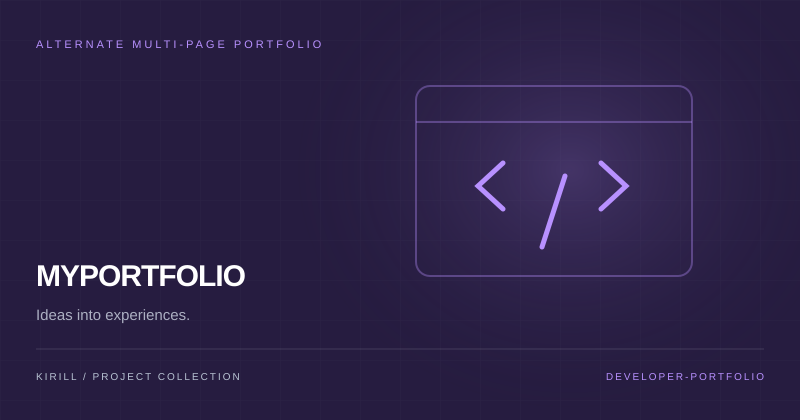

HTML / CSS / JAVASCRIPT / THREE.JS
↗
TENSILE FITNESS
An interactive gym website concept with a 3D hero scene, classes, schedule, coaches, plans and animated page transitions.
VIEW SOURCE CODE ↗01 / SELECTED PROJECTS
Web experiences, creative concepts and personal software projects. Different ideas, one goal: turning code into something useful and memorable.
PROJECT ARCHIVE / 2026An interactive gym website concept with a 3D hero scene, classes, schedule, coaches, plans and animated page transitions.
VIEW SOURCE CODE ↗An elegant interactive flower boutique concept with an expressive visual identity and responsive design.
VIEW SOURCE CODE ↗A modern café website with warm colours, menu presentation, photo sections and mobile-friendly layout.
VIEW SOURCE CODE ↗
A cinematic space education concept with Earth, Venus and Mars switching, an interactive orbital simulation, planet comparisons and a knowledge quiz.
VIEW SOURCE CODE ↗
A freight and logistics website concept covering road, air, ocean and project cargo services, with scroll-driven storytelling and a shipment-tracking demo.
VIEW SOURCE CODE ↗
A productivity SaaS landing page concept with a dashboard-style product preview, interactive interface details, feature sections and clear pricing.
VIEW SOURCE CODE ↗
A Bulgarian-language florist demo with bouquet collections, occasion sections, floral photography and gentle entrance animations. A separate visual direction from Flower Studio.
VIEW SOURCE CODE ↗
A playful Bulgarian pet-grooming website concept with service pages, a filterable gallery and a booking-message helper for preparing and copying an appointment inquiry.
VIEW SOURCE CODE ↗
A Bulgarian automotive service website concept for Varna, combining an interactive vehicle presentation, tyre-service information and clear contact details.
VIEW SOURCE CODE ↗
An alternate personal portfolio with a neon visual identity, project search and category filters, plus dedicated about, services and contact pages.
VIEW SOURCE CODE ↗A desktop voice-assistant project exploring commands, AI interaction and custom assistant behaviour.
VIEW SOURCE CODE ↗An AI-powered Telegram bot with customizable behaviour, conversations, commands and API integration.
A workout tracking web application with exercise information, workout statuses, database operations and progress views.
An ASP.NET MVC event application with authentication, event creation, joining, editing and relational data.
A custom personal profile website inspired by social bios, using personalised layout and visual effects.